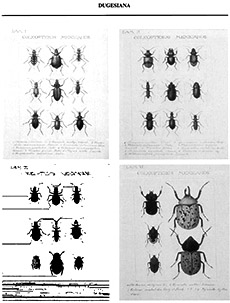

Referencias
- García-París, M., D. Buckley y G. Parra-Olea. 2007. Catálogo taxonómico-geográfico de los coleópteros de la Familia Meloidae de México. Graellsia, 63(2): 165-258.
- Brailovsky, H. y B.Gómez. Colecciones Zoológicas. Colecciones biológicas Nacionales, Instituto de Biología, Universidad Nacional Autónoma de México, 196 pp.
- Llorente-Bousquets J., et. al. 1996. Biodiversidad, taxonomía y biogeografía de artrópodos de México: Hacia una síntesis de su conocimiento Vol. III. Instituto de Biología, UNAM. 600 pp.
- Navarrete-Heredia, J.L. 2008. Dugesiana a quince años de su creación: su contribución a la entomología mexicana. Dugesiana 15(2): 109-115.
Eugenio Dugès, el médico apasionado de los escarabajos
1833 - 1895
Eugenio Romain Dugès fue un notable naturalista considerado el padre de la coleopterología en México, disciplina dedicada al estudio de los escarabajos. Nació en Montpellier, Francia, en 1833 y murió en México en 1895.
Estudió medicina en París y en 1865, año que llegó a México, ejerció esta profesión en varias ciudades de Guanajuato y en Morelia, Michoacán, ciudad en la que finalmente estableció su residencia. Fue profesor de anatomía e histología en el Colegió de San Nicolás, jefe del Departamento de Historia Natural del Museo Michoacano y a partir de 1892 y hasta su muerte director del museo.
A pesar de su profesión, se interesó en el estudio de los escarabajos, enfocándose en aspectos sobre su clasificación y ciclos biológicos. De las colectas que hizo durante sus recorridos por varios sitios del país, formó la colección de escarabajos mexicanos más importante del siglo XIX a nivel nacional, describiendo e ilustrando más de 3,000 especies. Actualmente dichos ejemplares forman parte de la Colección Nacional de Insectos del Instituto de Biología de la Universidad Nacional Autónoma de México (UNAM).
Escribió 30 artículos científicos sobre estos insectos, trabajos que aparecieron en publicaciones de la época como el periódico La Naturaleza, Anales del Museo Michoacano, Anales de la Sociedad Entomológica de Bélgica, el Boletín de la Sociedad Zoológica de Francia y la revista norteamericana Insect Life.
En su honor se creó en 1994 la revista Dugesiana, publicación especializada en el estudio de los insectos y editada por el Centro de Estudios en Zoología de la Universidad de Guadalajara.
¿Sabías qué?
Los escarabajos (Orden Coleoptera) son el grupo de insectos más rico en especies, a nivel mundial se conocen alrededor de 358,000 especies, lo que corresponde a aproximadamente 40% del total de insectos y 30% de animales.
A su muerte, Eugenio Dugès dejó sin publicar 10 voluminosos tomos de una Coleopterlogía mexicana, que hoy custodia el Instituto de Biología de la UNAM.
Aportación

Ilustraciones inéditas de "La Coleopterografía Mexicana", iniciada por M. Villada.
Imagen tomada de: Eugenio Dugés: Un precursor de la entomología en México. Santiago Zaragoza Caballero. Universidad de Guadalajara